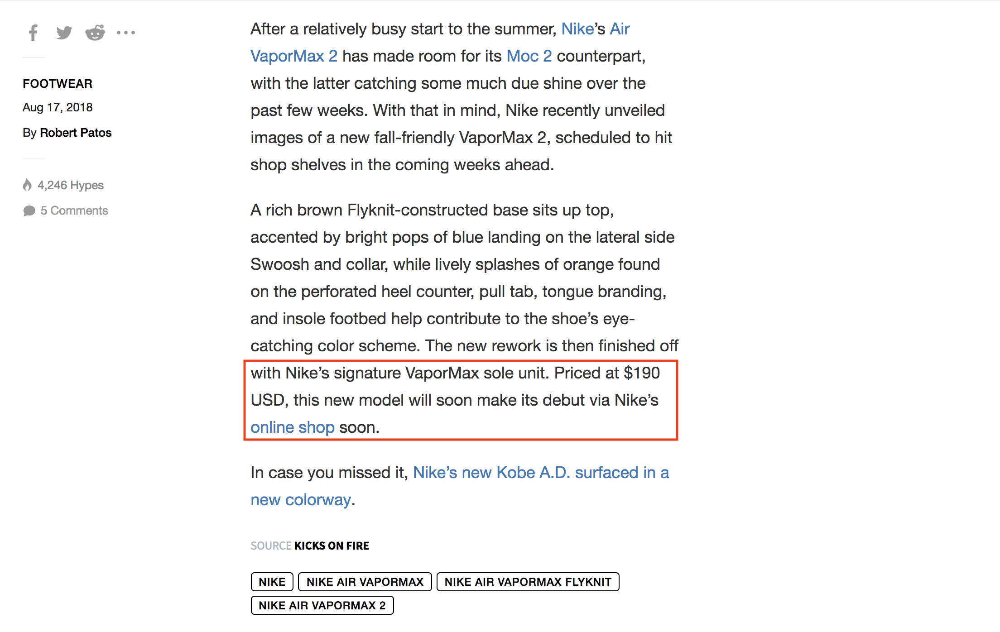
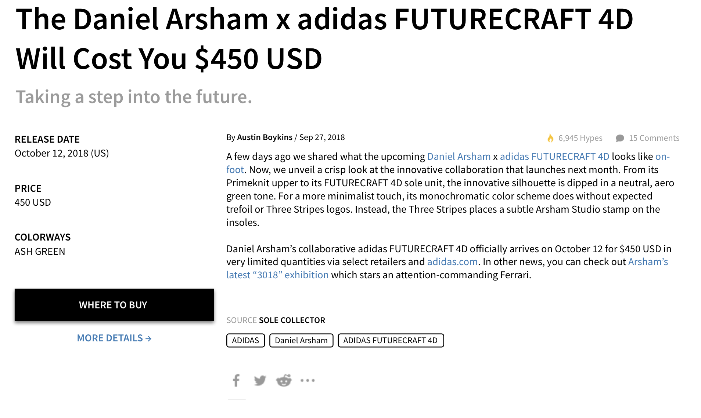

As someone who enjoys collecting shoes, I find Hypebeast* fairly annoying to use: I have to navigate blocks of flowery yet unsubstantial language to find information. The information would always be hidden within the paragraphs of “writing,” and if I were lucky, I would maybe find out that the shoe is just "dropping soon." Here's my take on how to improve the footwear section.
*Hypebeast.com is a popular website for people to stay up to speed on streetwear, sneakers, and other hype things.
Problem
The problem with hypebeast is that they structure their articles so that if you want to find your answer, you are going to have to go through clicking the article, and scrolling/scanning through the article until you find your answer. It’s basically built so that they can maximize what content the user has to go through (or in my case filter through) in order to find relevant information. I would think that they do this so they can maximize viewership and basically force a user to look through unwanted content to then finally reach some sort of relevant content.
I can understand to a certain extent as to why hypebeast is layed out in such a way, but it is extremely painful, as a user, to find information. At the end of the day, how hypebeast is structured makes the experience awful: it should not be this cumbersome to find information about a shoe.
 Example article text on a shoeMost of the content is filler and flowery text to pad the article, and they do that so that their articles look like they might have promising or interesting information. if you look at the vapormax example, I have to scroll basically all the way to the second to last sentence to find out that the shoe costs $190 and that the model will “soon make its debut via Nike’s online shop soon.”
Solution
This project is essentially my take on how I would lay out Hypebeast's shoe page for the average sneakerhead like me. The goal is to design the page in a way that makes the information easily accessible and essentially easier to find. While designing this page, my focus was primarily to surface relevant and important information of a shoe without sacrificing relevant content discovery, something that I believe Hypebeast needs to thrive as a business.
Improvements I made to the page:
Process
The following is what I am trying to solve for:
I am a sneakerhead by heart, and I would like to discover upcoming sneakers and learn more about the story, the design, the release date, and other relevant information.
 Redesigned shoe article updated sidebar and main article sectionI found that Hypebeast tried to incorporate their release info, but they ended up making a new section under the article. They created a new section that had a repeat title to repeat what shoe it is. Furthermore, they show another picture of the shoe, which seems redundant: I'm reading the article and have seen the pictures already.
The side bar was previously used to show user engagement: media share links to show user engagement info in the form of hypes and comments, which doesn't seem that immediately useful. This side bar is a perfect place to show release information, as it lies right in the direct line of site of the user [think "F" pattern]. I moved the release information to the sidebar for ease of access.
TITLE
I moved the title of the article to BELOW the image, so I could keep it closer to the article body.
The shoe images created a huge disconnect btween the with the title and article. The
title was right below the nav bar, which fights for the user's attention.
BYLINE
There wasn't really a byline in place with the article, as it was thrown in with the sidebar
media links and hypes. Therefore, I moved that to right above the article: give credit where
credit is due, regardless of the quality of the article.
SHARING
Lastly, I moved the media sharing links to the bottom of the article, next to the source and the article
tags. I would only feel inclined to share an article AFTER I read it: after I made a
decision as to if this article was worth sharing or not. Since the bottom of the article had comments,
source, tags, and others, I felt that the media share section had more relevance in that section since
this area is what prompts an action.
RELEVANT ARTICLES
Previously, Hypebeast had two sections to show relevant articles: related to the shoe or other recent
articles. Obviously, this was for the user's ease of content exploration. However, I felt that
showing recent articles does not add to much value, since they could be from art or technology which
don't relate to footwear.
Furthermore, the relevant articles had this thumbnail and title grid system, while the recent articles section had a list view with a thumbnail, which did not seem consistent. The relevant articles should take more precendence, since this is a footwear page. Thus, I created relevant articles section that would list articles like the homepage, which stays consistent with the website.
LIGHTBOX CONTROLS
Most of the time spent on hypebeast is browsing the footwear articles list aka the homepage. I felt that there should be a way for users to be able to browse photos quickly without having to click into the article. This sort of low commitment information retrieval could help the user decide if they want to read more about the article as additional photos could provoke a user's interest. I added the lightbox controls to each article item so users could peak at the slideshow before they decide to click on the article. Mobile as well as desktop users could swipe through photos like how instragram does it.
"FOOTWEAR" TAG
The "footwear" tag that previously was above the title was removed, as it is unecessary to be the first
piece of information: the title should be the first piece of information. Additionally, the footwear tag
does not add value, as all articles are under footwear. If hypebeast were to implement a
more specific tag like "reveal" or "drop details," just something to distinguish the TYPE of article,
then it would add value to add the tag.
SUBTITLE
Despite my distaste for their useless subtitles, I decided to keep the subtitle in the article list with the hopes that hypebeast could leverage KEY information. Hypebeast could TOTALLY leverage the subtitle to provide release information, but instead they choose to insert a crappy catch phrase like "don't miss out". This could bring the release information one level upwards, thus saving the user one click to open a new page and then digging through the article.